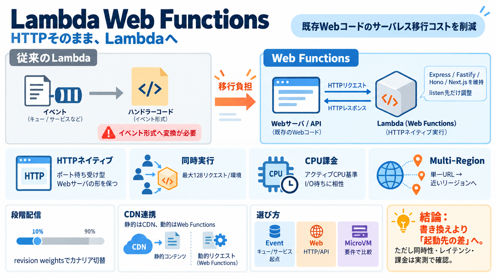

リリース前のAWS Lambda Web Functions（lambda-web）の仕組みを公開ソースから読み解いてみた | DevelopersIO
この記事では、公開リポジトリのソースを読み、リソース構成、デプロイの仕組み、エンドポイントの公開方式、CloudFront と IAM の定義を整理しました。 ## 公開されている情報と現在の状態 botocore 1.43.107（2…

この記事では、公開リポジトリのソースを読み、リソース構成、デプロイの仕組み、エンドポイントの公開方式、CloudFront と IAM の定義を整理しました。 ## 公開されている情報と現在の状態 botocore 1.43.107（2…
### Lambda Pricing (us-east-1) | Component | Price | --- | | Requests | $0.20 per 1 million requests | | Duration (128…
TL;DR Workers は軽量な V8 isolates 上でエッジで実行され、cold start がほぼゼロで、既定でグローバルに分散されます Lambda は AWS リージョンで microVM モデルにより実行され、多く…
alt alt From startups to enterprises, find AWS solutions scaled to your needs. Access tailored resources, pricing model…
コンテンツに移動 ナビゲーションに移動 Amazon Web Service(AWS)導入開発支援 1. HOME 2. 技術記事 3. AWS 4. 「AWS Lambda」と「Google Cloud Functions」とは 2…